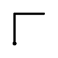
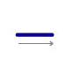
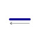

The InkEdit control provides an easy way to capture, recognize, and display ink.
This implementation of the InkEdit control is based on the RichEdit control. The managed (.NET Framework) implementation of InkEdit is based on the RichTextBox control.
The primary purpose of the InkEdit control is to collect ink, recognize it, and display it in text form. Additionally, it supports displaying ink as an embedded object with text formatting capabilities, such as bold and underline.
InkEdit supports the following gestures.
| Gesture | Gesture Name | Action |
|---|---|---|
| Down-left | Enter | |
| Down-left-long | Enter | |
|  | Up-right | Tab |
| Up-right-long | Tab | |
|  | Right | Space |
|  | Left | Backspace |
Gesture events that you can handle contain gesture, stroke, and cursor information you can use to send text to InkEdit or place data on the clipboard.
InkEdit also provides a correction user interface that enables users to view and select from alternates, use the on-screen keyboard, and character/letter/block recognizers.
InkEdit is designed to work well in a form scenario for single line as well as multiline text entry and editing. The primary intended use for InkEdit is to get text input from a user in the form of handwriting. By default, ink input is recognized and text is inserted in its place. The default user interface for InkEdit resembles that of the RichTextBox control, except when the user is laying down ink. You can display original ink rather than text; however, the ink is scaled to the current input font size of the InkEdit control and is displayed inline with other text.
[!Note]
For security reasons, you must use standard procedures to open or close a file, stream the input/output, and set the RTF or Text property.
The InkEdit control is set to recognize ink as text by default. To enable users to add ink as ink, set the InkInsertMode property to InsertAsInk.
For detailed reference information about the InkEdit control, see InkEdit.
[!Note]
If you use the Win32 InkEdit control and place it inside a group box, make sure the box has a transparent style; otherwise, InkEdit is not able to collect ink.
[!Note]
To ensure ink is displayed properly, call the InkEdit control Refresh method when it receives an HScroll or VScroll event.
The following sections detail the use of the InkEdit control: